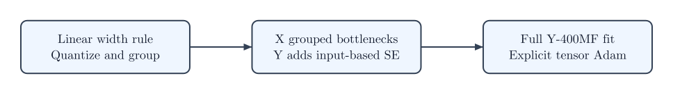
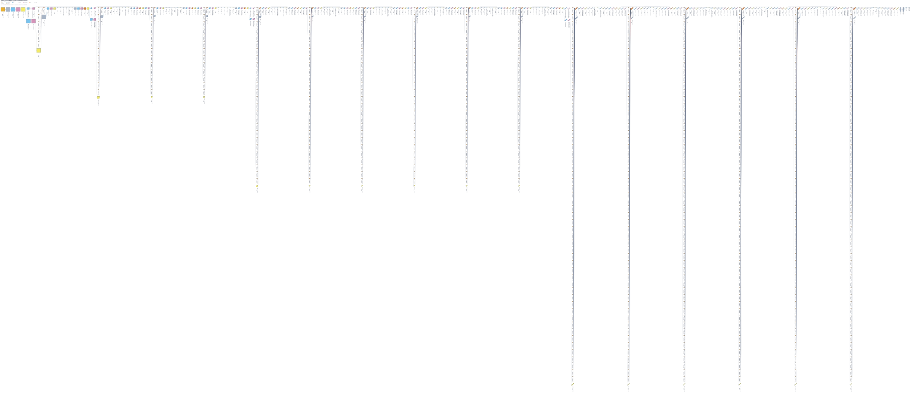
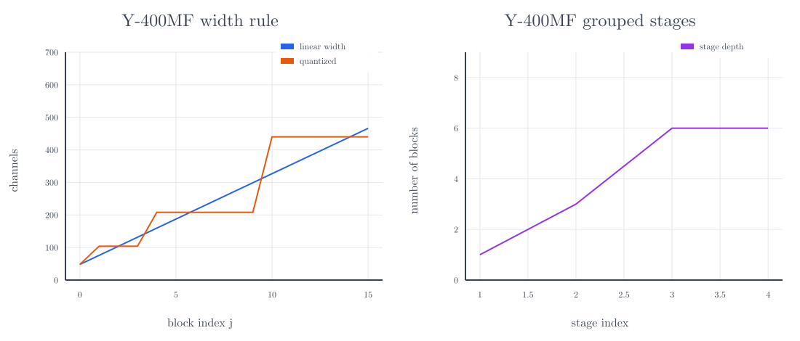
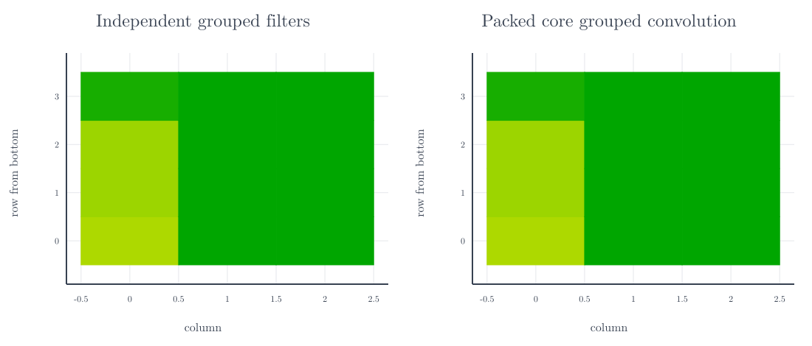
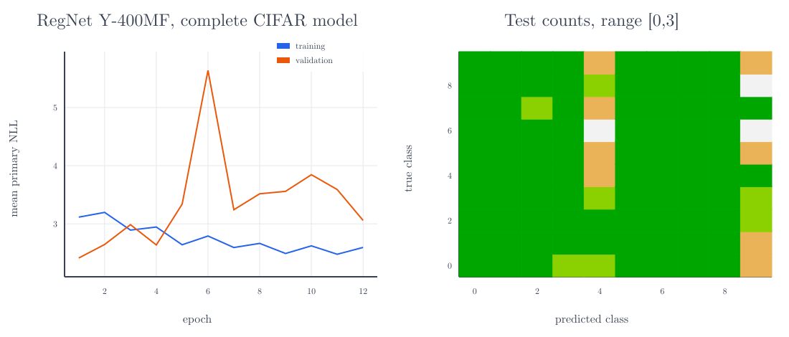
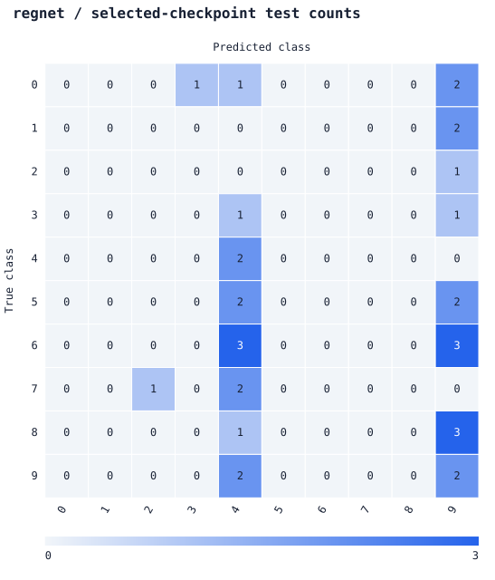

RegNet: A Quantized Width Rule and Complete X/Y Classifiers
Abstract
RegNet generates stage dimensions from a compact quantized linear rule. We inspect that rule, compare packed and split grouped-filter derivatives, verify all fourteen released budgets, then explicitly fit the full Y-400MF CIFAR network with tensor Adam.
Source example: examples/cpp/source/nn/1_convolutional_neural_networks/1.4_efficient_and_mobile_architectures/regnet.cpp.
The method
For block index j, RegNet starts with a linear continuous width, quantizes it to multiplicative steps, then aligns it to eight:
The reference uses Float32 arithmetic and ties-to-even rounding. Consecutive equal q values form stages; their widths are adjusted to a compatible group width min(g,width). The effective 3×3 group COUNT is output_width/group_width. This distinction matters: the table's g is channels per group. These calculations are architecture metadata, with no learned predictions or fitting. The helper temporarily selects nearest rounding in the caller thread and restores the previous mode, including when width generation throws. All outputs must remain integer-representable.
Y-400MF has d=16,w0=48,wa=27.89,wm=2.09 and group width eight, giving stages 48/104/208/440 with depths 1/3/6/6. X-400MF has widths 32/64/160/400 and depths 1/2/7/12. The fourteen released X/Y designs below check every stage width/depth, full learned parameter count and moving-state count. Full weight models run at 64 pixels to bound computation; 224-pixel convolution output sides scale EXACTLY by 224/64 because both geometries divide through all five downsamplings. Pooled SE and classifier costs stay fixed. X/Y-400MF also execute actual 224-pixel forwards to validate this explicit target-budget calculation. The report does not claim all fourteen large models were forwarded at 224 pixels or timed.
The stem is 32-channel 3×3/2/BN/ReLU. Each stage starts with stride two, including stage one. Bottlenecks use dense 1×1/BN/ReLU, grouped 3×3/BN/ReLU, optional SE, linear 1×1/BN, shortcut sum and ReLU. Projection shortcuts have 1×1/BN. X omits SE; Y pools spatially, reduces to lround(.25*INPUT_channels) with ReLU, expands with logistic sigmoid, then scales channels. The reduction is not .25 times output width. Global mean and a biased classifier finish the model. There is no dropout. He-uniform fan-in is an initialization adaptation; BN learns scale/shift with epsilon 1e-5. Full X/Y-400MF have 5495976/4344144 learned scalars. The packed grouped helper preserves independent per-group learned leaves; four Float64 fixtures compare every derivative against split filtering at stride/dilation two.
The full-width Y-400MF backward probe keeps all sixteen blocks at 64 pixels, shifts BN betas/SE biases and checks finite nonzero gradients for every parameter tensor. Unlike ungated additive streams, ReLU after every sum prevents the same unconditional constant-shift cancellation claim. Moving updates are disabled only for that diagnostic. MAC budgets count convolution, pooled SE and classifier products, excluding BN, pooling, activation/addition and memory traffic. One MAC is a multiply-accumulate pair; the values are not measured runtime or counts of individual FLOPs.
The visible fit changes only the first stem stride and class count for original 32×32 CIFAR images. All four stage downsamplings remain. It has 3907554 learned/27152 moving scalars and uses 64 fit/32 validation/32 official-test rows, 12 batch-eight epochs (96 updates, kept short so the report builds quickly), Adam(.001), explicit kernel L2=.0001/2 and independent padded crops/flips. Validation selects paired parameters/moving moments before test scoring. This bounded single-seed experiment differs from the larger source fit and published ImageNet schedules; it cannot establish design-space or benchmark superiority.
The concept diagram below is drawn by dm::graphics::Diagram. Its editable C++
source is the complete block below; regeneration uses the same datamunge toolchain
as the numerical examples. Exports consume the saved local SVG.
#include <dm/dm.hpp>
int main() {
std::filesystem::create_directories("build");
dm::graphics::Diagram diagram;
diagram.node("n0", {0.0, 0}, "Linear width rule\nQuantize and group");
diagram.node("n1", {5.2, 0}, "X grouped bottlenecks\nY adds input-based SE");
diagram.node("n2", {10.4, 0}, "Full Y-400MF fit\nExplicit tensor Adam");
diagram.edge("n0", "n1").edge("n1", "n2");
diagram.save_svg("build/regnet_concept.svg");
}
Executed tensor architecture
This figure executes the inference configuration shown in the code, using a zero-valued shape probe without fitting or loading a checkpoint. Named stage boundaries group whole subgraphs where available; other nodes retain functional-layer detail. Exact batch-inclusive shapes and reachable parameter totals come from the trace. Shared linear scales map spatial dimensions and channel counts to blocks; the one-pixel visibility floor is disclosed in the legend. Labels use compact monospace text, rotate counterclockwise and sit beside their own glyphs. Arrows flow left to right; wide diagrams scroll at native size on the website.
#include <dm/dm.hpp>
int main() {
namespace n = dm::nn;
namespace m = n::models;
n::set_num_threads(2);
std::filesystem::create_directories("build");
n::models::RegNetConfig cfg;
cfg.classes = 10;
cfg.small_stem = true;
n::ParameterStore p(17), state(17);
n::Module architecture_model(
[&](const n::Tensor& image) { return n::models::RegNet(p, state, image, cfg, false).logits; },
"RegNet: A Quantized Width Rule and Complete X/Y Classifiers");
n::ModelPlotOptions options;
options.style = n::ModelPlotStyle::Flow;
options.detail = n::ModelPlotDetail::Blocks;
options.labels = {.type = n::ModelPlotLabel::NameAndShape, .size = 12, .wrap = 24};
options.spacing = {.layer = 24, .lane = 12, .label = 8, .margin = 20};
options.sizing.spatial_size = 96;
options.sizing.channel_size = 42;
options.sizing.minimum_extent = 1;
options.opacity = .8;
const auto diagram = architecture_model.plot(n::zeros({1, 32, 32, 3}), options);
diagram.save_svg("build/regnet_architecture.svg");
std::print(
"{} displayed nodes; {} reachable learned values.\n",
diagram.nodes().size(),
diagram.parameter_count());
}852 displayed nodes; 3907554 reachable learned values.

Simple width design example
Stage metadata exposes the rounding/grouping rule before model allocation.
#include <dm/dm.hpp>
int main() {
namespace n = dm::nn;
const auto m = n::models::RegNetModel("y400mf"), x = n::models::RegNetModel("x400mf");
const auto d = n::models::RegNetDesign(m), dx = n::models::RegNetDesign(x);
if (d.widths != std::vector<int>{48, 104, 208, 440} ||
d.depths != std::vector<int>{1, 3, 6, 6} ||
dx.widths != std::vector<int>{32, 64, 160, 400} ||
dx.depths != std::vector<int>{1, 2, 7, 12})
return 1;
const int previous = std::fegetround();
for (int mode : {FE_DOWNWARD, FE_UPWARD}) {
std::fesetround(mode);
const auto same = n::models::RegNetDesign(m);
if (std::fegetround() != mode || same.quantized != d.quantized) {
std::fesetround(previous);
return 1;
}
}
std::fesetround(previous);
std::vector<double> index, continuous, quantized;
for (size_t i = 0; i < d.continuous.size(); ++i) {
index.push_back(i);
continuous.push_back(d.continuous[i]);
quantized.push_back(d.quantized[i]);
}
auto widths = dm::graphics::RPlot::create(), depths = dm::graphics::RPlot::create();
widths.lines(index, continuous, "linear width", {37, 99, 235})
.lines(index, quantized, "quantized", {234, 88, 12})
.title("Y-400MF width rule")
.x_label("block index j")
.y_label("channels")
.y_limits(0, 700);
depths.lines({1, 2, 3, 4}, {1, 3, 6, 6}, "stage depth", {147, 51, 234})
.title("Y-400MF grouped stages")
.x_label("stage index")
.y_label("number of blocks")
.y_limits(0, 9);
std::filesystem::create_directories("build");
dm::graphics::RLayout::create(1, 2)
.add(widths)
.add(depths)
.size(1100, 470)
.fit_panels()
.save_svg("build/regnet_design.svg");
std::print("Y-400MF: widths [48,104,208,440], depths [1,3,6,6], group widths [8,8,8,8]. "
"X-400MF: [32,64,160,400], depths [1,2,7,12]. Per-thread rounding mode is "
"restored after design calls.\n");
}Y-400MF: widths [48,104,208,440], depths [1,3,6,6], group widths [8,8,8,8]. X-400MF: [32,64,160,400], depths [1,2,7,12]. Per-thread rounding mode is restored after design calls.

Packed grouped filters
Every input/filter/bias derivative is compared with independent groups.
#include <dm/dm.hpp>
int main() {
namespace n = dm::nn;
const auto type = n::DType::Float64;
auto layout = dm::graphics::RLayout::create(1, 2);
double maximum = 0;
for (bool bias : {false, true})
for (auto activation : {n::Activation::None, n::Activation::Relu}) {
n::ParameterStore p(17, type);
const auto x = n::sin(.13 * n::arange(0, 2 * 7 * 6 * 12).to(type))
.reshape({2, 7, 6, 12})
.detach()
.requires_grad_();
n::ConvLayerOptions cfg;
cfg.bias = bias;
cfg.activation = activation;
cfg.stride = 2;
cfg.dilation = 2;
const auto split = n::models::GroupedConv2D(p, "f", x, 15, 3, 3, cfg);
auto variables = p.parameters();
variables.push_back(x);
const auto a = n::grad(n::sum(n::square(split)), variables);
const auto packed = n::models::FusedGroupedConv2D(p, "f", x, 15, 3, 3, cfg);
const auto b = n::grad(n::sum(n::square(packed)), variables);
double error = n::max(n::abs(split - packed)).item();
for (size_t i = 0; i < a.size(); ++i)
error = std::max(error, n::max(n::abs(a[i] - b[i])).item());
if (error > 1e-11)
return 1;
maximum = std::max(maximum, error);
if (bias && activation == n::Activation::Relu) {
auto channel = [](const auto &t) {
return n::slice_axis(n::slice_axis(t, 0, 0, 1), 3, 0, 1)
.reshape({t.size(1), t.size(2)});
};
const double high = std::max(1e-12, n::max(split).item());
layout
.add(n::plot_tensor_map(channel(split), 0, high)
.title("Independent grouped filters"))
.add(n::plot_tensor_map(channel(packed), 0, high)
.title("Packed core grouped convolution"));
}
}
std::filesystem::create_directories("build");
layout.size(1100, 470).fit_panels().save_svg("build/regnet_grouped.svg");
std::print(
"Split/packed grouped values and every input/filter/optional-bias derivative agree, "
"stride 2/dilation 2, with/without bias and ReLU; maximum absolute error {:.12f}.\n",
maximum);
}Split/packed grouped values and every input/filter/optional-bias derivative agree, stride 2/dilation 2, with/without bias and ReLU; maximum absolute error 0.000000000000.

All released model budgets
Full weight counts and exact target-resolution arithmetic are distinguished explicitly.
#include <dm/dm.hpp>
int64_t target_macs(const dm::nn::models::MobileNetOutputs &out) {
int64_t total = out.classifier_macs;
for (const auto &l : out.layers) {
if (l.name.find("/se") != std::string::npos)
total += l.Macs();
else {
if ((l.shape[1] * 224) % 64 || (l.shape[2] * 224) % 64)
throw std::runtime_error("nonintegral target shape");
total += (l.shape[1] * 224 / 64) * (l.shape[2] * 224 / 64) * l.macs_per_position;
}
}
return total;
}
int main() {
namespace n = dm::nn;
n::set_num_threads(2);
struct Case {
const char *name;
std::int64_t params, state, macs;
std::vector<int> widths, depths;
};
const std::vector<Case> cases = {
{"x400mf", 5495976, 37856, 413812608, {32, 64, 160, 400}, {1, 2, 7, 12}},
{"x800mf", 7259656, 37312, 799699712, {64, 128, 288, 672}, {1, 3, 7, 5}},
{"x1.6gf", 9190136, 43504, 1602849792, {72, 168, 408, 912}, {2, 4, 10, 2}},
{"x3.2gf", 15296552, 62560, 3176621952, {96, 192, 432, 1008}, {2, 6, 15, 2}},
{"x8gf", 39572648, 90464, 7995132416, {80, 240, 720, 1920}, {2, 5, 15, 1}},
{"x16gf", 54278536, 111168, 15940755456, {256, 512, 896, 2048}, {2, 6, 13, 1}},
{"x32gf", 107811560, 162016, 31735929792, {336, 672, 1344, 2520}, {2, 7, 13, 1}},
{"y400mf", 4344144, 27152, 401842848, {48, 104, 208, 440}, {1, 3, 6, 6}},
{"y800mf", 6432512, 30432, 833856256, {64, 144, 320, 784}, {1, 3, 8, 2}},
{"y1.6gf", 11202430, 52672, 1612076160, {48, 120, 336, 888}, {2, 6, 17, 2}},
{"y3.2gf", 19436338, 66160, 3176482752, {72, 216, 576, 1512}, {2, 5, 13, 1}},
{"y8gf", 39381472, 86528, 8473070592, {224, 448, 896, 2016}, {2, 4, 10, 1}},
{"y16gf", 83590140, 122816, 15911510272, {224, 448, 1232, 3024}, {2, 4, 11, 1}},
{"y32gf", 145046770, 158288, 32279552832, {232, 696, 1392, 3712}, {2, 5, 12, 1}}};
for (const auto &c : cases) {
const auto design = n::models::RegNetDesign(n::models::RegNetModel(c.name));
if (design.widths != c.widths || design.depths != c.depths)
return 1;
n::NoGradGuard guard;
n::ParameterStore p(17), state(17);
n::models::RegNetConfig cfg;
cfg.model = c.name;
const auto out = n::models::RegNet(p, state, n::zeros({1, 64, 64, 3}), cfg);
const int64_t macs = target_macs(out);
if (p.count() != c.params || state.count() != c.state || macs != c.macs ||
out.features.size(1) != 2)
return 1;
if (std::string(c.name) == "x400mf" || std::string(c.name) == "y400mf") {
const auto full = n::models::RegNet(p, state, n::zeros({1, 224, 224, 3}), cfg);
if (full.Macs() != macs || full.features.size(1) != 7)
return 1;
}
std::print("{}: {} learned / {} moving scalars; exact 224-pixel kernel/SE/classifier "
"budget {} MACs; all stage widths/depths verified.\n",
c.name, p.count(), state.count(), macs);
}
std::print("Fourteen full-weight models use 64-pixel count-only forwards. Convolution "
"output sides scale exactly by 224/64 for these divisible geometries; pooled SE "
"and classifier costs stay fixed. X/Y-400MF additionally execute actual "
"224-pixel forwards to cross-check this budget calculation.\n");
}x400mf: 5495976 learned / 37856 moving scalars; exact 224-pixel kernel/SE/classifier budget 413812608 MACs; all stage widths/depths verified. x800mf: 7259656 learned / 37312 moving scalars; exact 224-pixel kernel/SE/classifier budget 799699712 MACs; all stage widths/depths verified. x1.6gf: 9190136 learned / 43504 moving scalars; exact 224-pixel kernel/SE/classifier budget 1602849792 MACs; all stage widths/depths verified. x3.2gf: 15296552 learned / 62560 moving scalars; exact 224-pixel kernel/SE/classifier budget 3176621952 MACs; all stage widths/depths verified. x8gf: 39572648 learned / 90464 moving scalars; exact 224-pixel kernel/SE/classifier budget 7995132416 MACs; all stage widths/depths verified. x16gf: 54278536 learned / 111168 moving scalars; exact 224-pixel kernel/SE/classifier budget 15940755456 MACs; all stage widths/depths verified. x32gf: 107811560 learned / 162016 moving scalars; exact 224-pixel kernel/SE/classifier budget 31735929792 MACs; all stage widths/depths verified. y400mf: 4344144 learned / 27152 moving scalars; exact 224-pixel kernel/SE/classifier budget 401842848 MACs; all stage widths/depths verified. y800mf: 6432512 learned / 30432 moving scalars; exact 224-pixel kernel/SE/classifier budget 833856256 MACs; all stage widths/depths verified. y1.6gf: 11202430 learned / 52672 moving scalars; exact 224-pixel kernel/SE/classifier budget 1612076160 MACs; all stage widths/depths verified. y3.2gf: 19436338 learned / 66160 moving scalars; exact 224-pixel kernel/SE/classifier budget 3176482752 MACs; all stage widths/depths verified. y8gf: 39381472 learned / 86528 moving scalars; exact 224-pixel kernel/SE/classifier budget 8473070592 MACs; all stage widths/depths verified. y16gf: 83590140 learned / 122816 moving scalars; exact 224-pixel kernel/SE/classifier budget 15911510272 MACs; all stage widths/depths verified. y32gf: 145046770 learned / 158288 moving scalars; exact 224-pixel kernel/SE/classifier budget 32279552832 MACs; all stage widths/depths verified. Fourteen full-weight models use 64-pixel count-only forwards. Convolution output sides scale exactly by 224/64 for these divisible geometries; pooled SE and classifier costs stay fixed. X/Y-400MF additionally execute actual 224-pixel forwards to cross-check this budget calculation.
Complete-model backward
All Y-400MF blocks and learned tensors participate in the probe.
#include <dm/dm.hpp>
int main() {
namespace n = dm::nn;
n::set_num_threads(2);
n::ParameterStore p(17), state(17);
n::models::RegNetConfig cfg;
cfg.update_stats = false;
const auto x = n::sin(.37 * n::arange(0, 2 * 64 * 64 * 3).to(n::DType::Float32))
.reshape({2, 64, 64, 3});
{
n::NoGradGuard guard;
n::models::RegNet(p, state, x, cfg, true);
for (const auto &name : p.names())
if (name.ends_with("/beta") ||
(name.find("/se/") != std::string::npos && name.ends_with("/b")))
p.set(name, (.5 * n::sin(.37 * n::arange(0, p.at(name).numel()).to(n::DType::Float32) +
double(name.size())))
.reshape(p.at(name).shape()));
}
const auto out = n::models::RegNet(p, state, x, cfg, true);
const auto gradients = n::grad(n::mean(n::square(out.logits)), p.parameters());
double minimum = std::numeric_limits<double>::infinity(), maximum = 0;
for (const auto &g : gradients) {
const double norm = n::sqrt(n::sum(n::square(g))).item();
if (!std::isfinite(norm))
return 1;
minimum = std::min(minimum, norm);
maximum = std::max(maximum, norm);
}
if (minimum <= 1e-6 * maximum)
return 1;
std::print("Full-width Y-400MF at 64 pixels: {} finite nonzero parameter-tensor gradients, "
"norms [{:.9f},{:.9f}]. All sixteen blocks, input-based SE and four stage "
"downsamplings retained.\n",
gradients.size(), minimum, maximum);
}Full-width Y-400MF at 64 pixels: 740 finite nonzero parameter-tensor gradients, norms [0.008265282,80.051101685]. All sixteen blocks, input-based SE and four stage downsamplings retained.
Dataset and explicit fitting
Original images precede the visible optimization loop.
#include <dm/dm.hpp>
int main() {
namespace n = dm::nn;
std::filesystem::path cache;
if (const auto *p = std::getenv("DATAMUNGE_DATA_DIR"))
cache = p;
else if (const auto *p = std::getenv("XDG_CACHE_HOME"))
cache = std::filesystem::path(p) / "datamunge/datasets";
else
cache = std::filesystem::path(std::getenv("HOME")) / ".cache/datamunge/datasets";
dm::datasets::fetch("cifar10", (cache / "cifar10").string());
const auto raw =
n::data::LoadCifar({cache / "cifar10/data_batch_1.bin"}, n::data::Cifar::k10);
const auto images = n::cast(raw.images, n::DType::Float32) / 255.;
const auto labels = raw.labels;
std::vector<int64_t> rows;
for (int cls = 0; cls < 10; ++cls) {
for (int64_t row = 0; row < labels.numel(); ++row)
if (labels.at({row}) == cls) {
rows.push_back(row);
break;
}
}
if (rows.size() != 10)
return 1;
std::filesystem::create_directories("build");
n::save_image_grid(n::take_rows(images, rows), "build/regnet_inputs.png", 5, 0., 1., 4, 1.,
4);
std::print("One original cached training image per class, IDs 0..4 then 5..9.\n");
}One original cached training image per class, IDs 0..4 then 5..9.

#include <dm/dm.hpp>
int main() {
int rendered_confusions = 0;
namespace n = dm::nn;
n::set_num_threads(2);
std::filesystem::path cache;
if (const auto* p = std::getenv("DATAMUNGE_DATA_DIR"))
cache = p;
else if (const auto* p = std::getenv("XDG_CACHE_HOME"))
cache = std::filesystem::path(p) / "datamunge/datasets";
else
cache = std::filesystem::path(std::getenv("HOME")) / ".cache/datamunge/datasets";
dm::datasets::fetch("cifar10", (cache / "cifar10").string());
const auto raw = n::data::LoadCifar({cache / "cifar10/data_batch_1.bin"}, n::data::Cifar::k10);
const auto images = n::cast(raw.images, n::DType::Float32) / 255.,
labels = n::cast(raw.labels, n::DType::Int64);
const auto tx = n::slice_axis(images, 0, 0, 64), ty = n::slice_axis(labels, 0, 0, 64);
const auto vx = 2 * n::slice_axis(images, 0, 64, 96) - 1, vy = n::slice_axis(labels, 0, 64, 96);
const auto official = n::load_cifar10((cache / "cifar10").string(), "test");
const auto qx = 2 * n::slice_axis(official.images, 0, 0, 32) - 1,
qy = n::slice_axis(official.labels, 0, 0, 32);
n::models::RegNetConfig cfg;
cfg.classes = 10;
cfg.small_stem = true;
n::ParameterStore p(17), state(17);
auto output = [&](const n::Tensor& image, bool training) {
return n::models::RegNet(p, state, image, cfg, training).logits;
};
{
n::NoGradGuard guard;
output(n::zeros({1, 32, 32, 3}), false);
}
if (p.count() != 3907554 || state.count() != 27152)
return 1;
n::OptimizerConfig config;
config.kind = n::OptimizerKind::Adam;
n::Optimizer optimizer(p, .001, config);
n::BatchOrder batches(64, 8, 2026);
n::Generator augmentation(151);
std::filesystem::create_directories("build");
const std::string checkpoint = "build/regnet_best";
double best = std::numeric_limits<double>::infinity();
int best_epoch = 0;
std::vector<double> epochs, train, validation;
for (int epoch = 1; epoch <= 12; ++epoch) {
batches.begin_epoch();
n::WeightedMean average;
for (auto rows = batches.next(); !rows.empty(); rows = batches.next()) {
const auto batch = n::take_rows(tx, rows), target = n::take_rows(ty, rows);
std::vector<n::Tensor> transformed;
for (int64_t row = 0; row < batch.size(0); ++row) {
auto image =
n::pad(n::slice_axis(batch, 0, row, row + 1), {{0, 0}, {4, 4}, {4, 4}, {0, 0}});
image = n::augment::random_crop(image, 32, 32, augmentation);
transformed.push_back(n::augment::random_flip_left_right(image, augmentation));
}
const auto nll =
n::sparse_softmax_cross_entropy(output(2 * n::concat(transformed, 0) - 1, true), target);
auto objective = nll;
for (const auto& w : p.parameters())
if (w.dim() >= 2)
objective = objective + .00005 * n::sum(n::square(w));
optimizer.minimize(objective);
average.add(nll.item(), rows.size());
}
n::NoGradGuard guard;
const double val = n::sparse_softmax_cross_entropy(output(vx, false), vy).item();
if (!std::isfinite(val))
return 1;
epochs.push_back(epoch);
train.push_back(average.value());
validation.push_back(val);
if (val < best) {
best = val;
best_epoch = epoch;
p.save(checkpoint + "_params.npz");
state.save(checkpoint + "_state.npz");
}
}
p.load(checkpoint + "_params.npz");
state.load(checkpoint + "_state.npz");
n::NoGradGuard guard;
const auto prediction = output(qx, false);
const double test_nll = n::sparse_softmax_cross_entropy(prediction, qy).item();
const double training_nll = n::sparse_softmax_cross_entropy(output(2 * tx - 1, false), ty).item();
if (!std::isfinite(test_nll))
return 1;
const auto truth = n::one_hot(qy, 10), predicted = n::one_hot(n::argmax(prediction, 1), 10);
const auto confusion = n::matmul(n::transpose(truth, {1, 0}), predicted);
n::save_npz("build/regnet_heldout_"+std::to_string(rendered_confusions)+".npz",{{"truth",qy},{"logits",prediction},{"counts",confusion.to(n::DType::Int64)}});
n::ConfusionMatrix::from_counts(confusion.to(n::DType::Int64))
.save_svg(
"build/regnet_confusion_api_" + std::to_string(rendered_confusions++) + ".svg",
{.title = "regnet / selected-checkpoint test counts"});
if (n::sum(confusion).item() != 32)
return 1;
auto trace = dm::graphics::RPlot::create();
trace.lines(epochs, train, "training", {37, 99, 235})
.lines(epochs, validation, "validation", {234, 88, 12})
.title("RegNet Y-400MF, complete CIFAR model")
.x_label("epoch")
.y_label("mean primary NLL");
// Flip before the image helper so its vertical tick is the actual true-class ID.
auto counts = n::plot_tensor_map(n::reverse(confusion, {0}), 0, n::max(confusion).item());
counts
.title(
"Test counts, range [0," + std::to_string(static_cast<int>(n::max(confusion).item())) +
"]")
.x_label("predicted class")
.y_label("true class")
.x_limits(-.5, 9.5)
.y_limits(-.5, 9.5);
dm::graphics::RLayout::create(1, 2).add(trace).add(counts).size(1100, 470).fit_panels().save_svg(
"build/regnet_training.svg");
std::print(
"64 fit / 32 validation / 32 official-test rows; {} learned scalars, {} moving "
"scalars; {} explicit Adam updates.\nSelected epoch {}; validation NLL {:.6f}; "
"inference training NLL {:.6f}; test NLL {:.6f}; test accuracy {:.6f}.\n",
p.count(),
state.count(),
optimizer.iterations(),
best_epoch,
best,
training_nll,
test_nll,
n::accuracy(prediction, qy));
}64 fit / 32 validation / 32 official-test rows; 3907554 learned scalars, 27152 moving scalars; 96 explicit Adam updates. Selected epoch 1; validation NLL 2.412704; inference training NLL 2.302238; test NLL 2.407260; test accuracy 0.125000.

The executed results above report the current selected checkpoint. These fixed small subsets and source budgets do not establish a ranking of architectures. Assess training, validation and test NLL together with the complete held-out confusion. Augmented or batch-moment training objectives and saved-state inference can differ; weak or below-chance outcomes remain part of the result. The independent geometry, parameter-count and derivative checks establish separate implementation claims.
Native confusion matrices
These matrices use the held-out predictions from the executed program above.
The native ConfusionMatrix SVG API labels exact counts with true classes
running from top to bottom and predicted classes from left to right.

Regenerate every adjacent view
Each alternate architecture or held-out confusion below is copied from this run's local build directory.
#include <dm/dm.hpp>
int main(){std::filesystem::create_directories("build");std::filesystem::copy_file("build/regnet_confusion_api_0.svg","build/export_regnet_confusion_api_0.svg",std::filesystem::copy_options::overwrite_existing);}Conclusion
A compact rounded rule generates complete grouped residual classifiers. Width metadata, independent grouped-filter checks and exact budgets explain the design; a visible tensor Adam loop connects full Y-400MF topology to fitting while keeping its small-data limitations explicit.
References
- [Radosavovic et al. (2020), Designing Network Design Spaces](https://arxiv.org/abs/2003.13678).
- [Torchvision RegNet reference](https://github.com/pytorch/vision/blob/main/torchvision/models/regnet.py).
- [CIFAR-10 dataset](https://www.cs.toronto.edu/~kriz/cifar.html).